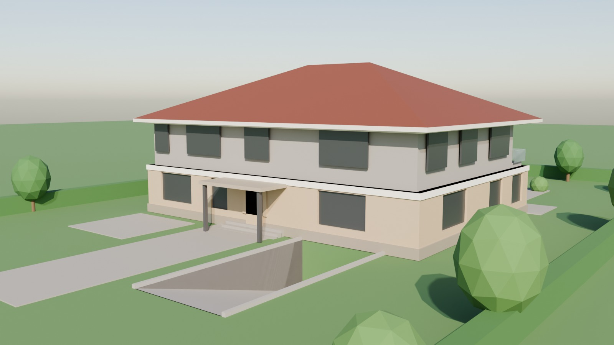
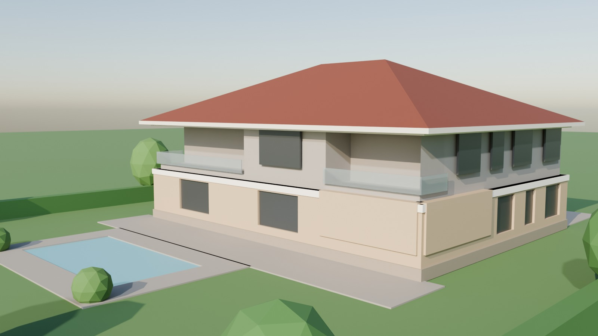
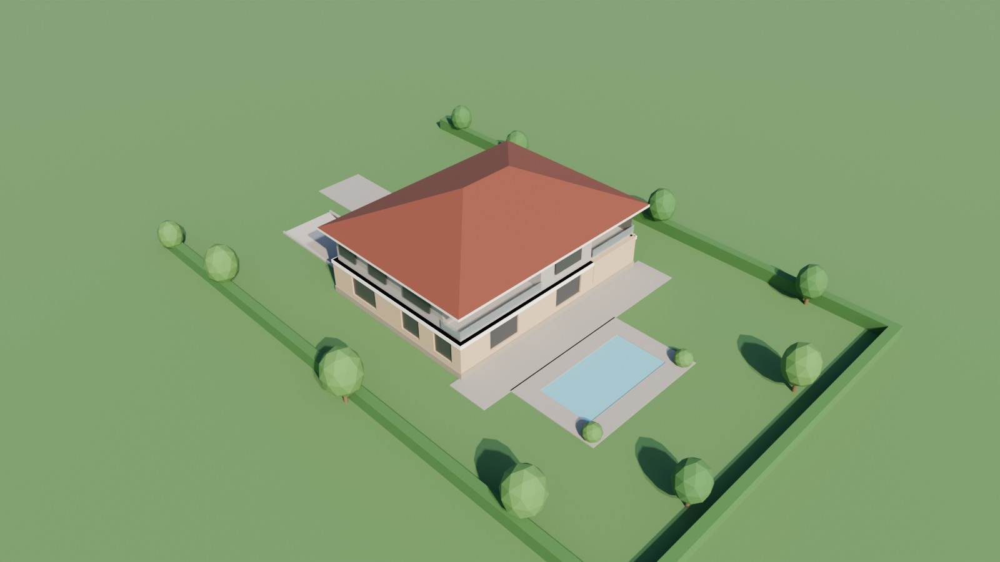
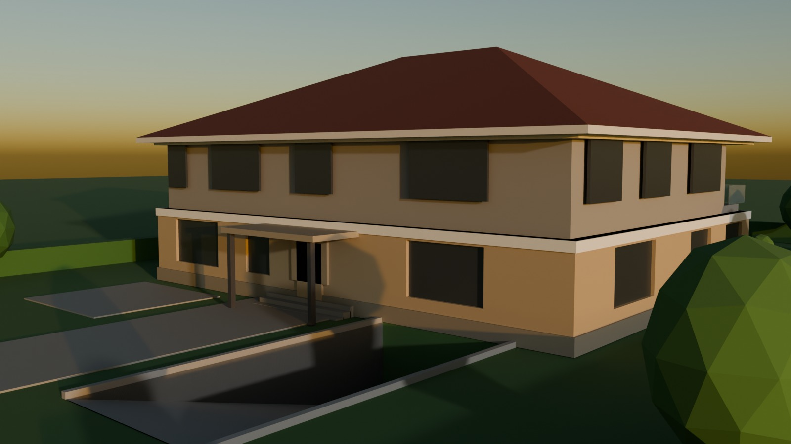
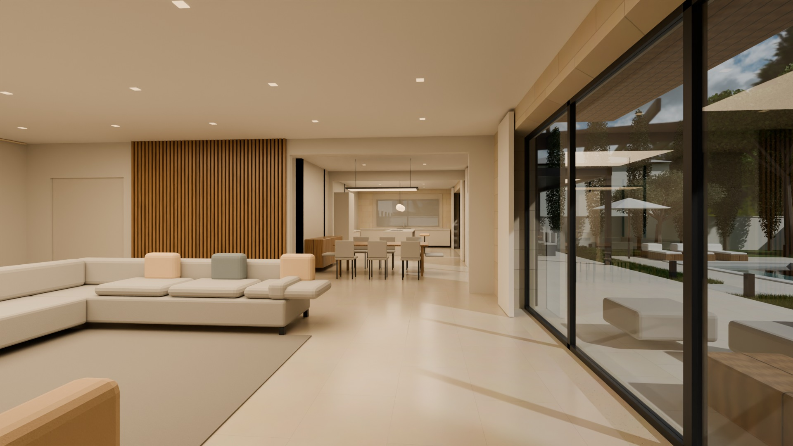

Görseller
Üç boyutlu model, kat planlarının geometrisinden (veri.py) otomatik kurulur: duvarlar, pencere ve kapı boşlukları, balkonlar, saçak, pergola, baca, ışıklıklar, kırma çatı ve peyzaj. Blender / Cycles ile hesaplanmıştır; malzeme ve bitkiler temsilidir.

Giriş cephesi İmar yoluna bakan kuzey cephesi: çift yükseklikte galeri camı, ahşap kaplı giriş nişi ve saçak, zemin katta garaj ve araç yolu. 
Bahçe cephesi ve havuz Güney cephesi: salon, yemek ve mutfak kaldır-sür doğramalarla terasa açılır; üst katta konsol balkonlar, mutfak önünde pergola. 
Kuş bakışı Parselin bütünü: 20 × 15 m kütle, kırma çatı, ön bahçede araç yolu, arka bahçede 10 × 4 m havuz, yan bahçelerde bodrum ışıklıkları. 
Akşam görünümü Alacakaranlıkta iç mekan ve bahçe aydınlatması yanık hâlde. 
Salon – yemek – mutfak Zemin kat açık planı: şömineli salon, yemek alanı ve adalı mutfak; güney camlarından bahçe. Görseller ön tasarım kütlesini anlatır; cephe kaplaması, doğrama bölümleri ve peyzaj uygulamada detaylandırılacaktır.